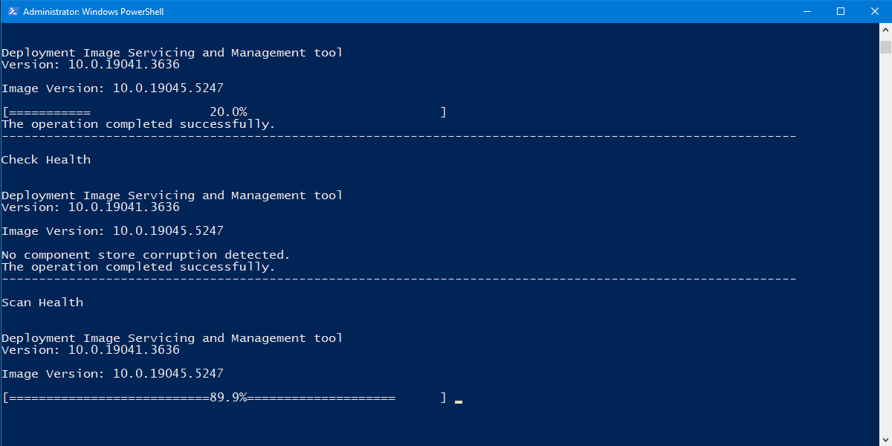

Startup Optimization
Task Manager is opened so you can review the Startup apps tab and disable unnecessary startup entries yourself. Maintenance asks whether any apps were disabled and records the result in the report.
Comprehensive Windows Utility
Maintenance is a comprehensive Windows PowerShell utility that combines interactive startup and driver-software checks with file-system repair scheduling, Windows image repair, BSOD crash-dump analysis, browser and temporary-file cleanup, Windows and application updates, drive optimization, restore-point handling, and a detailed HTML report.
Workflow
Maintenance performs a long sequence of repair, cleanup, update, reporting, and restart tasks. Some early steps are interactive so you can review startup apps and vendor driver software while you are still at the computer.
Pre-flight
The script records the currently active Windows power plan, creates or reuses a custom Always on power scheme, activates it, and sets monitor, disk, standby, and hibernate timeouts to zero for both AC and DC power. In the script's final cleanup block, it attempts to restore the power plan that was active before Maintenance started.
Interactive Checks
Task Manager is opened so you can review the Startup apps tab and disable unnecessary startup entries yourself. Maintenance asks whether any apps were disabled and records the result in the report.
If Intel hardware is detected, Maintenance checks for Intel Driver & Support Assistant. When missing, it can install the tool through WinGet after asking for permission.
If NVIDIA hardware is detected, Maintenance checks for NVIDIA App. When missing, it can open NVIDIA's official App download page so you can download and install it manually.
If AMD hardware is detected, Maintenance checks for AMD Software / Adrenalin / Radeon Software. When missing, it can open AMD's official Drivers and Support page for manual installation.
Disk & Windows Repair
Maintenance schedules CHKDSK /f /r on the Windows system drive for the next boot. If Riot Vanguard's tray process is detected, the script asks you to exit Vanguard before continuing.
The repair sequence runs DISM AnalyzeComponentStore, StartComponentCleanup, CheckHealth, ScanHealth, and RestoreHealth against the online Windows installation.
After DISM, Maintenance runs sfc /scannow to verify protected Windows system files and attempt repair when Windows reports corruption.
A one-time RunOnce helper checks recent Windows CHKDSK/Wininit events and Bootex.log after reboot, inserts the result into the HTML report, then removes its RunOnce entry.
Crash Analysis
Maintenance checks the standard Windows kernel crash-dump locations C:\Windows\MEMORY.DMP and C:\Windows\Minidump. When dumps are present, it attempts automated debugger analysis.
The script looks for Microsoft's CDB debugger. If it is not available, Maintenance can install Microsoft WinDbg through WinGet so CDB is available for automated analysis.
When the script installed WinDbg only for this maintenance run, it attempts to remove that installation after dump analysis completes.
The report can include the dump type, BugCheck name/code, a plain-language description, likely module or driver information, and analysis guidance when CDB returns usable data.
CDB is configured to use a local symbol cache backed by Microsoft's public symbol server while analyzing the dump files.
Cleanup
Browser Cleanup handles detected Chrome, Edge, Brave, Opera, Opera GX, and Firefox profiles. Browser processes are stopped before the cleanup runs.
Depending on the browser, the script clears cache, code cache, GPU cache, and history/download-history database files. It measures estimated space before and after cleanup.
Temp Cleanup covers selected Windows/user temp and cache locations including Windows Temp, SoftwareDistribution downloads, Recent items, INetCache, Office web cache, D3D cache, Windows Error Reporting, Delivery Optimization cache, Panther logs, CBS logs, the Recycle Bin, and Windows.old when present.
The script measures the configured cleanup locations before and after removal and records estimated total space freed.
Windows.old and Windows Update download-cache contents when those locations exist. Run Maintenance only when you are comfortable clearing this data.
Updates
Maintenance installs the NuGet provider and PSWindowsUpdate module as needed, then requests Windows/Microsoft updates with Install-WindowsUpdate. Feature-upgrade titles containing “Upgrade” are excluded and update-triggered reboot is suppressed until Maintenance performs its own final restart.
WinGet is used to upgrade installed applications with hidden/non-interactive options, source/package agreement acceptance, and support for packages whose installed version is unknown.
When a Battle.net update is available, Maintenance searches for the existing Battle.net installation location and tries to update it in place. Battle.net is temporarily pinned while the general WinGet update pass runs so it is not processed a second time.
Windows Update and App Update failures are captured for the final report rather than silently presenting the section as successful.
Optimization & Recovery
Optimize-Volume is run for non-removable, non-optical volumes that have drive letters. Each drive receives its own success or error result in the report.
Maintenance attempts to ensure System Protection is enabled on the system drive before creating a restore point.
The latest restore point is recorded before and after the attempt so the script can verify whether a new Maintenance restore point was actually created.
If Windows reports that a restore point already exists within 1440 minutes (24 hours), the report treats that as a completed result rather than a failure.
HTML Report
Maintenance builds a local HTML report containing a system-information header and individual status sections for the work performed. The report is finalized on the Desktop after the reboot/CHKDSK handoff completes.
Restart & Finalization
Bootex.log result and inserts the normalized result into the report.Launcher
Run Me.bat launches a new elevated PowerShell process with UAC using -Verb RunAs and uses -ExecutionPolicy Bypass for the launched process. The PowerShell script itself also declares #requires -RunAsAdministrator.
Screenshot

FAQ
Yes. When the main script finishes without a fatal error, it issues an immediate Windows restart. Save your work before starting.
It schedules CHKDSK /f /r on the system drive for the next boot. The final HTML report is updated with the result after reboot and sign-in.
Yes. It checks MEMORY.DMP and the Windows Minidump folder and can use Microsoft's CDB debugger for automated analysis.
Yes. The current Browser Cleanup removes history/download-history database files for supported browser profiles along with several cache types.
Yes. The App Updates section uses WinGet for installed application upgrades and includes special handling for Battle.net.
After restart and the one-time CHKDSK result update, the completed HTML report is moved to the current user's Desktop.
The script records the active power-plan GUID before Maintenance begins and attempts to restore that plan in its final cleanup block.
The script's yes/no prompts accept qq as an exit command, allowing you to leave Maintenance during those interactive stages.